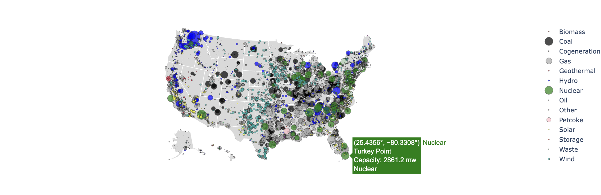

Clean Energy Project
This project investigates where different type of energy sources are located in the United States and their capacity in megawatts (MW). It uses the World Resources Institute’s Global Power Plant Database and filters for U.S. facilities. This project's main output is an interactive Plotly bubble map for the United States with geographic clustering sorted by energy source. Other simple graphs are included for a further analysis of energy trends in the United States.
More details
Problem
This project analyzes the geographic distribution and capacity of energy sources across the United States using the Global Power Plant Database. It aims to visualize patterns and trends in power generation through an interactive Plotly bubble map and supporting analyses.
Approach
The approach involves cleaning and filtering the Global Power Plant Database to isolate U.S. facilities and relevant variables. The data is then transformed and visualized using Plotly to create an interactive bubble map, along with additional plots to analyze trends in energy capacity and distribution.
Results & Impact
The results highlight clear geographic patterns and capacity differences among energy sources across the United States. These insights support better understanding of the current energy landscape and can inform future planning, policy decisions, and resource allocation.